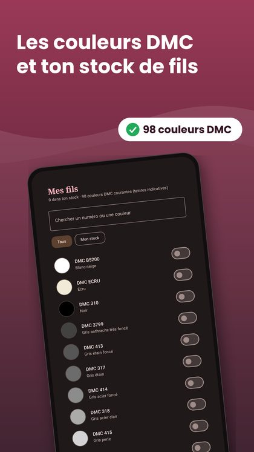

Pointelle
Pointelle



Point de croix
Cross-stitch
- Importez votre patron en PDF, en image ou en photo : la grille est repérée automatiquement.
- Dessinez aussi votre propre grille avec les fils DMC.
- Marquez les cases d'un tap, ou d'un glissement avec le pinceau.
- Couleurs reconnues, suivi par couleur, « à acheter », aperçu du rendu final.
- Point arrière, statistiques par jour et estimation de fin.
- Import your pattern as a PDF, image or photo: the chart is detected automatically.
- Or draw your own chart with DMC threads.
- Mark cells with a tap, or drag with the brush.
- Recognised colours, per-colour tracking, shopping list, preview of the finished piece.
- Backstitch, daily statistics and an estimated finish date.
Tricot et crochet
Knitting and crochet
Compteurs de rangs et de mailles, autant que vous voulez, avec de gros boutons faciles à utiliser.
Row and stitch counters, as many as you like, with big easy-to-use buttons.
Et aussi
Also
- Stock de fils, guide pour débuter, calculateurs de toile et d'échantillon.
- Sauvegarde, et synchronisation facultative via un dossier de votre propre cloud.
- Tout reste sur votre téléphone : aucune autorisation demandée.
- Thread stash, beginner's guide, fabric and gauge calculators.
- Backup, and optional sync through a folder in your own cloud.
- Everything stays on your phone: no permissions requested.